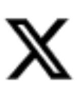

<div clas="'modal container">
<div class="modal-header row">
    <div class="col">
    <h1 class="modal-title">{{source}}</h1>
    <p class="date">{{date}}</p>
    </div>
    <div class="col-auto">
    <button type="button" class="custom-btn" aria-label="Close" (click)="activeModal.dismiss('Cross click')">
        <svg xmlns="http://www.w3.org/2000/svg" width="20" height="20" fill="#2b80fd" class="bi bi-x" viewBox="0 0 16 16">
            <path d="M4.646 4.646a.5.5 0 0 1 .708 0L8 7.293l2.646-2.647a.5.5 0 0 1 .708.708L8.707 8l2.647 2.646a.5.5 0 0 1-.708.708L8 8.707l-2.646 2.647a.5.5 0 0 1-.708-.708L7.293 8 4.646 5.354a.5.5 0 0 1 0-.708"/>
          </svg>
          <hr class="horizontal">
    </button>
</div>
</div>
<div class="modal-body">
    <h2  class='headline' style="line-height: normal">{{headline}}</h2>
    <p>{{summary}}</p>
    <p class="redirect-url">For more details click <a target="_blank" href="{{link}}">here</a></p>

    <div class="share">
        <p style="color: #535353;">Share</p>
        <a style="display: inline;" href="http://twitter.com/share?text={{headline}}&url={{link}}" target="_blank">
            
        </a>
        <a target="_blank" href="https://www.facebook.com/sharer/sharer.php?u={{link}}&amp;src=sdkpreparse">
            
        </a>
    </div>
</div>

</div>